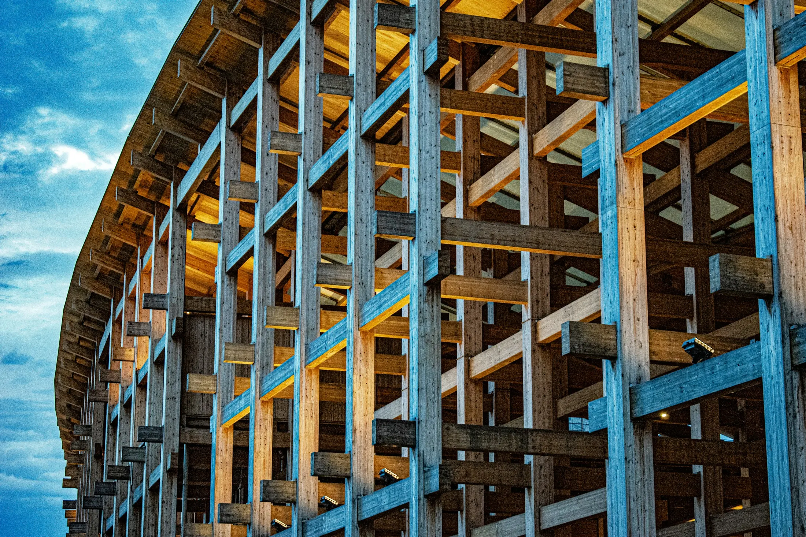
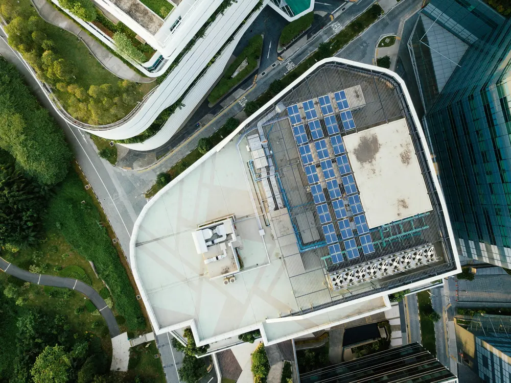

Sechs Leistungen. Ein Gebäude.
Energie ist eine Kennzahl, kein Konzept. Deshalb betrachten wir Konstruktion, Bauphysik, Versorgungstechnik, Materialien und Nutzung als ein zusammenhängendes System – und beraten bereits vor der Planung.


01 · Leistung
Neubau
Beim Neubau entstehen die wirksamsten Entscheidungen, bevor der erste Strich gezeichnet ist: Kompaktheit, Orientierung, Konstruktion und Anlagenkonzept legen den Energiebedarf für Jahrzehnte fest. Wir kommen deshalb früh in das Projekt und begleiten es bis zur Abschlussdokumentation.
- Zieldefinition – Effizienzstandard, Förderziel und Nachhaltigkeitsanspruch, bevor die Planung Fakten schafft.
- Energetische Konzeption – Hülle, Wärmeversorgung, Lüftung und Eigenstrom als ein System, in Varianten gerechnet.
- Nachweise – GEG, Wärmebrücken, sommerlicher Wärmeschutz, Schall- und Wärmeschutz durch staatlich anerkannte Sachverständige.
- Baubegleitung – Ausführungsplanung prüfen, Begehungen, Luftdichtheitsmessung.
- Abschlussdokumentation – Verwendungsnachweis und Bestätigung nach Durchführung.

02 · Leistung
Sanierung
Im Bestand beginnt jede gute Entscheidung mit einem belastbaren Ist-Zustand. Erst wenn Konstruktion, Feuchteverhalten und Anlagentechnik verstanden sind, lässt sich eine Reihenfolge festlegen, die bezahlbar bleibt und keine Sackgassen produziert.
- Bestandsaufnahme – Aufmaß, Bauteilaufbauten, Anlagentechnik, Verbrauchsdaten; bei Bedarf Thermografie und Luftdichtheitsmessung.
- Individueller Sanierungsfahrplan – welche Maßnahme wann, was sie kostet, was sie einspart – förderfähig und aufeinander abgestimmt.
- Feuchteschutz – Innendämmung und Anschlussdetails werden nachgerechnet statt geschätzt.
- Umsetzungsbegleitung – Ausschreibung, Angebotsprüfung, Kontrolle der Ausführung.
- Nachweisführung – Bestätigung zum Antrag und nach Durchführung.

03 · Leistung
Denkmalberatung
Baudenkmale vertragen keine Standardlösungen. Als Energieberater*innen für Baudenkmale suchen wir den Spielraum zwischen Erhalt und Effizienz – im Austausch mit der Denkmalbehörde und immer entlang dessen, was die Substanz aushält.
- Substanzanalyse – historische Aufbauten, Materialverträglichkeit, bestehende Schäden.
- Abstimmung mit der Behörde – frühzeitig mit der Unteren Denkmalbehörde, damit die Planung genehmigungsfähig bleibt.
- Innendämmung – hygrothermische Berechnung statt Faustregeln.
- Angepasste Anlagentechnik – Wärmeübergabe und Lüftung unauffällig und wirksam.
- Sonderförderung – eigene Anforderungen und Förderwege für Baudenkmale.

04 · Leistung
Fördermittelgestaltung
Förderlogik ist Planungslogik: Welches Programm passt, entscheidet mit darüber, welcher Standard sinnvoll ist. Wir sind als unabhängige Energieeffizienz-Expert*innen für Fördermittel des Bundes gelistet und bringen beides von Anfang an zusammen.
- Programmwahl – BEG, KfW, BAFA und Landesprogramme gegeneinander gerechnet, inklusive Kombinierbarkeit und Fristen.
- Zielwerte – Effizienzhaus-Stufe, QNG-Anforderung und Wirtschaftlichkeit aufeinander abgestimmt.
- Antragstellung – alle technischen Unterlagen und Bestätigungen zum Antrag, abgestimmt mit Ihrer Hausbank.
- Begleitung – Baubegleitung als eigenständig förderfähige Leistung.
- Verwendungsnachweis – Bestätigung nach Durchführung und Dokumentation zur Auszahlung.

05 · Leistung
BIM & Digitalisierung
Ein Gebäudemodell ist kein Selbstzweck, sondern eine gemeinsame Wahrheit. Wenn alle Gewerke auf denselben Daten arbeiten, werden Varianten gerechnet statt diskutiert und Konflikte fallen auf, solange sie noch nichts kosten.
- Modellbasierte Berechnung – Energiebilanz, Nachweise und Mengen direkt aus dem Modell.
- Gebäudesimulation – thermische Simulation für sommerlichen Wärmeschutz, Verschattung und Komfort.
- Lebenszyklusanalyse – graue Energie und CO₂-Bilanz über den gesamten Lebenszyklus.
- Koordination – klare Datenanforderungen an alle Beteiligten.
- Automatisierung – wiederkehrende Auswertungen laufen automatisiert, weniger Übertragungsfehler.

06 · Leistung
Green Building
Zertifizierungssysteme sind kein Selbstzweck. Sie strukturieren Entscheidungen und machen Nachhaltigkeitsqualität überprüfbar – von der Zieldefinition über die Planung bis zur Nachweisführung.
- Zieldefinition – welches System zu welchem Projekt passt: Nutzung, Förderziel, Anspruch.
- Planungsbegleitung – Kriterien in Planungsaufgaben übersetzt und über alle Phasen nachgehalten.
- Nachweisführung – Dokumentation, Prüfung und Einreichung bis zur Auszeichnung.
- Klimaschutzfahrplan – belastbarer Pfad zur Klimaneutralität für Einzelgebäude und Portfolios.
- Kreislaufwirtschaft – Rückbaubarkeit, sortenreine Fügung, Materialpässe.
Schnellcheck
Welche Leistung passt zu Ihrem Vorhaben?
Drei Fragen, eine Empfehlung – und ein Gefühl dafür, womit wir bei Ihnen anfangen würden.
Frage 1 von 3
Worum geht es bei Ihrem Gebäude?
Frage 2 von 3
Wie groß ist das Vorhaben?
Frage 3 von 3
Was ist Ihnen am wichtigsten?
Unsere Empfehlung
Projekt anfragenGreen Building
Systeme, mit denen wir arbeiten.
QNG
Qualitätssiegel Nachhaltiges Gebäude – Voraussetzung für die Förderung klimafreundlicher Neubauten. Wir führen den Nachweis von der Zieldefinition bis zur Bestätigung.
DGNB
Zertifizierung über ökologische, ökonomische, soziokulturelle, technische und prozessuale Qualität – mit klaren Zielwerten je Planungsphase.
BNK / BNG
Bewertungssysteme für kleine Wohngebäude und Nichtwohngebäude: schlanker Kriterienkatalog, überprüfbare Nachhaltigkeitsqualität.
NaWoh
Qualitätssiegel für nachhaltigen Wohnungsbau – abgestimmt auf die Prozesse von Wohnungsunternehmen und Genossenschaften.
Circular Economy
Rückbaubarkeit, sortenreine Fügung und Materialpässe: Bauteile bleiben Rohstoff statt Abfall zu werden.
Klimaschutzfahrplan
Ein belastbarer Pfad zur Klimaneutralität für Portfolios und Einzelgebäude – mit Maßnahmen, Zeitachse und CO₂-Bilanz.
Schadstoffsanierung
Erkundung, Bewertung und Rückbaukonzepte für belastete Bausubstanz – Grundlage jeder Bestandsstrategie.
Flächenentsiegelung
Regenwassermanagement, Mikroklima und Biodiversität: Freiflächen als Teil der Gebäudeperformance.
Kontakt
Welche Leistung auch passt – wir fangen mit dem Gebäude an.
Neubau, Sanierung oder Baudenkmal – wir beraten Sie, bevor die Planung Fakten schafft. Unverbindlich, in Aachen und München.